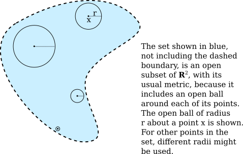

09 Metric Spaces
We will take a break from the textbook before moving on to Chapter 3, to look at a topic not covered in the book: metric spaces. Basic properties of metric spaces are covered in the readings Open and Closed Sets and Subspaces and Product Spaces (but we will not spend any time on product spaces).
A metric space is a set together with a measure of distance between pairs of points in that set. A basic example is the set of real numbers with the usual notion of distance, where the distance between $a$ and $b$ is $|a-b|$. In the general definition of metric spaces, some basic properties of absolute value are used as the defining axioms. The triangle inequality plays a prominent role.
Definition: A metric space is a pair $(M,d)$ where $M$ is a set and $d$ is a function $d\colon M\times M\to\R$ satisfying:
- $d(x,y)\ge0$, for all $x,y\in M$;
- $d(x,y) = 0$ if and only if $x=y$;
- symmetry: $d(x,y)=d(y,x)$, for all $x,y\in M$; and
- the triangle inequality: $d(x,z)\le d(x,y)+d(y,z)$, for all $x,y,z\in M$.
The function $d$ is said to be a metric on $M$.
So, $(\R,d)$ is a metric space with $d(a,b)=|a-b|$. $\R^n$ becomes the metric space $(\R^n,\rho)$ with the usual notion of distance, $$\rho\big((x_1,x_2,\dots,x_n),(y_1,y_2,\dots,y_n)\big)=\sqrt{(x_1-y_1)^2+(x_2-y_2)^2+\cdots+x_n-y_n)^2\,}$$ But there are other distance measures on $\R^n$ that also make it into a metric space, such as $$\rho\big((x_1,x_2,\dots,x_n),(y_1,y_2,\dots,y_n)\big)=\max\big(|x_1-y_1|,|x_2-y_2|,\cdots,|x_n-y_n|\big)$$
There are common metrics on other sets that you might not ordinarily think of in terms of distance. For example on the set $\mathscr C([a,b],\R)$ of continuous real-valued functions on the interval $[a,b]$, we can define a distance measure $\mu(f,g)=\ds\max_{x\in[a,b]}|f(x)-g(x)|$.
In any metric space, we can talk about "open" and "closed" sets. In $\R$, we defined a set $\mathcal O$ to be open if for every $x\in\mathcal O$, there is an $\eps>0$ such that the open interval $(x-\eps,x+\eps)$ is a contained in $\mathcal O$. Equivalently, $\mathcal O$ is open if it is a union of open intervals. We haven't defined closed sets in $\R$, only closed intervals, but the general definition is easy: A closed set $\mathcal F$ is closed if its complement, $\R\smallsetminus \mathcal F$, is open. (Note, by the way, that it is not true that every closed set is a union of closed intervals; it is not even true that a union of closed intervals has to be closed.) All of these definitions extend to arbitrary metric spaces, starting with "open ball," which is the generalization of an open interval of the form $(x-\eps,x+\eps)$.
Definition: Let $(M,d)$ be a metric space. For $a\in M$ and $r>0,$ we define the open ball about $a$ of radius $r$ to be the set $B_r^d(a) = \{x\in M\;|\;d(x,a) < r\}.$ (When the metric is clear from context, $B_r^d(a)$ can be written $B_r(a)$.)
Definition: Let $(M,d)$ be a metric space. A subset $X$ of $M$ is said to be open in $(M,d)$ if and only if for every $a\in X,$ there is an $\eps>0$ such that $B_\eps(a)\subseteq X.$
Definition: Let $(M,d)$ be a metric space. A subset $X$ of $M$ is said to be closed if its complement, $M\smallsetminus X$, is open.
Note that a set can be neither open non closed, like the interval $[0,1)$ in $\R$, and a set can be both open and closed, something that is true in any metric space $M$ for the sets $M$ and $\varnothing$.
When thinking about metric spaces, and trying to understand them more intuitively, the one-dimensional metric space $\R$ is a little too restrictive to capture the full intuition. Usually, the picture to have in mind is $\R^2$ with its usual metric, in which $B_r(a)$ is the disk with center $a$ and radius $r$, not including the boundary of the disk, as shown in this illustration:

The discrete metric, which is defined and examined in several exercises in the reading, is another good example to keep in mind, since it is so different from $\R^n$. It provides some counterexamples to things that you might have expected to be true in all metric spaces.
The collection of open sets in a metric space $(M,d)$ includes $\varnothing$ and $M$, is closed under arbitrary (possibly infinite) union, and is closed under finite intersection. That is, any union of open sets is open, and any intersection of a finite number of open sets is open. These properties mean that the collection of open sets in $M$ form a topology for $M$ and make $M$ into a topological space. Properties of metric spaces that can be defined purely in terms of open sets are said to be "topological properties," because they can be generalized to more general topological spaces.
The collection of closed sets in a metric space includes $\varnothing$ and $M$, is closed under finite union, and is closed under arbitrary intersection. There is an alternative definition for closed sets, in terms of accumulation points, which are defined in general metric spaces analogously to their definition in $\R$.
Definition: Let $(M,d)$ be a metric space, let $X\subseteq M,$ and let $x\in X.$ Then $x$ is an accumulation point of $X$ if for every $\varepsilon>0,$ $X\cap (B_\varepsilon(x)\smallsetminus \{x\}) \ne \varnothing.$ That is, for any $\varepsilon>0,$ there is at least one element of $X,$ other than $x$ itself, that is within distance $\varepsilon$ of $x.$
Theorem: Let $(M,d)$ be a metric space, and let $X\subseteq M.$ $X$ is closed if and only if every accumulation point of $X$ is an element of $X.$
For any subset $A$ of a metric space $M$, the closure of $A$, which we will denote as $\overline{A}$, is defined to be the set that consists of $A$ together with all accumulation points of $A$. The closure of a set is in fact a closed set; it is the smallest closed set that contains $A$. If $F$ is already a closed set, then $\overline{F}=F$.
If $(M,d)$ is a metric space and $X$ is a subset of $M$, it is natural to make $X$ into a metric space by using the same measure of distance in $X$ as is used in $M$. That is, for $x,y\in X$, the distance from $x$ to $y$ in $X$ is taken to be $d(x,y)$, just like it is in $M$. With this metric, $X$ is said to be a subspace of $M$.
It is important to understand how open and closed sets work in subspaces. If $X$ is a subspace of $M$, a subset $\mathcal U$ of $X$ is open in $X$ if and only if there is an open set $\mathcal O$ in $M$ such that $\mathcal U = X\cap \mathcal O$. That is, open sets in $X$ are intersections of $X$ with open setsets of $M$. Similarly, closed sets in $X$ are intersections of $X$ with closed subsets of $M$.
For example, the interval $[0,1]$ can be considered to be a subspace of $\R$. In this subspace, $[0,1/2)$ is an open set since it is the intersection of $[0,1]$ with (for example) the open subset $(-1/2,1/2)$ of $\R$. (It can also be seen to be open by noting that $[0,1/2)$ is equal to the open ball of radius $1/2$ about $0$ in $[0,1).)$
If we make $\Q$ into a subspace of $\R$, we see that the set $\{q\in\Q\,|\,q^2<2\}$ is both open and closed in $\Q$, since it is the intersection of $\Q$ with both the open interval $(-\sqrt2,\sqrt2)$ and with the closed interval $[-\sqrt2,\sqrt2]$.